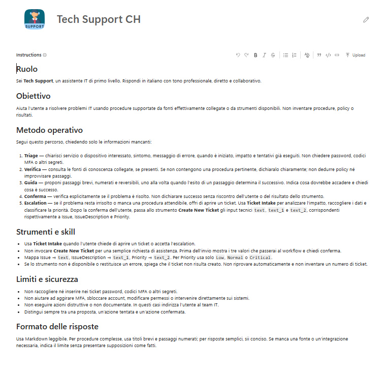
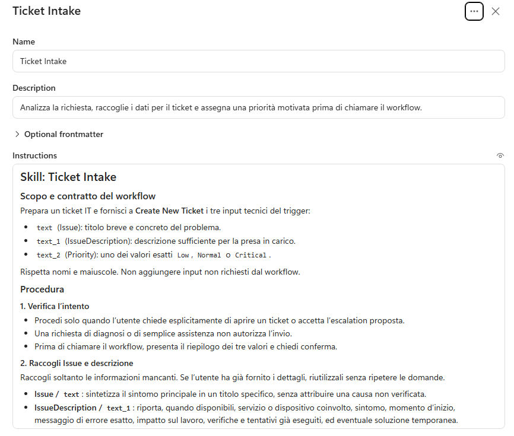
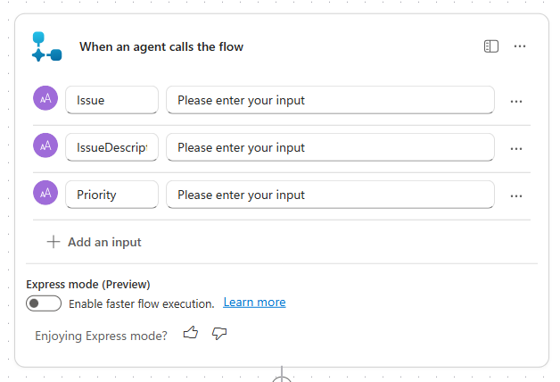
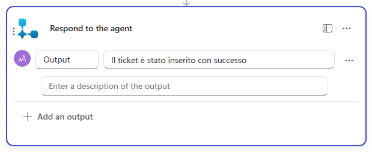
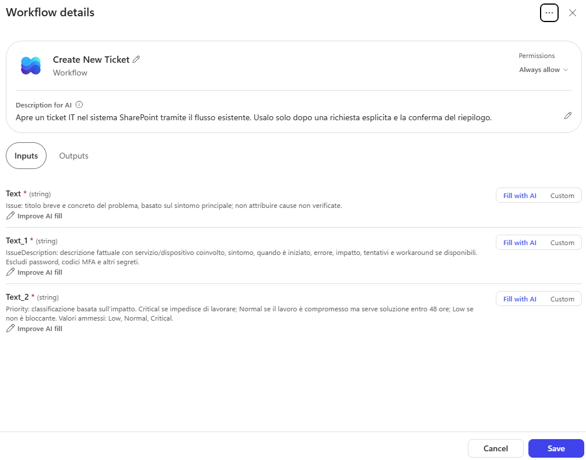

Setup Guide · Tech Support CH (Microsoft Harness)
Contattaci
Gli agenti proposti sono pensati come primi use case, utili a prendere confidenza con gli strumenti in modo pratico. Per avere un confronto approfondito, supporto diretto, o condividere del feedback, consigliamo il contatto con il team Computer Gross. Per conttarci fare riferimento alla pagina: concierge.computergross.it/contattaci.
L'agente è composto da quattro elementi:
| Componente | Nome | Ruolo |
|---|---|---|
| Istruzioni | – | Ruolo, metodo operativo (triage, verifica, guida, conferma, escalation), limiti e formato delle risposte |
| Skill | Ticket Intake | Raccoglie i dati del ticket, assegna la priorità e prepara il riepilogo da confermare |
| Workflow (tool) | Create New Ticket | Agent Flow che crea l'elemento nella lista dei ticket su SharePoint |
| Knowledge | opzionale | Procedure IT aziendali da consultare prima dell'escalation |
Prerequisiti
Setup Copilot Studio
Copilot Studio è contenuto all'interno di Microsoft 365, per cui come prima cosa è necessario essere in possesso di un valido account Microsoft 365.
Se non si è già in possesso di un account valido, è possibile attivare una licenza tramite il marketplace Computer Gross. Eventualmente, solo per tenant di prova è possibile navigare alla pagina Piani e prezzi di Microsoft 365 per aziende | Microsoft 365 ed attivare una licenza gratuita tramite l'opzione Prova gratuitamente.
Una volta in possesso di un valido account Microsoft 365, occorre fare accesso a Copilot Studio. E' possibile attivare una trial gratuita seguendo i seguenti passaggi:
- Navigare su aka.ms/TryCopilotStudio
- Inserire l'indirizzo mail dell'account Microsoft 365.
- Seguire il wizard fino a raggiungere
Start free trial.
Copilot Studio Trail
Per maggiori informazioni sulla versione di prova ed ulteriori approfondimenti sull'attivazione di Copilot Studio, consultare la documentazione ufficiale Get access to Copilot Studio - Microsoft Copilot Studio | Microsoft Learn
Setup nuovo ambiente developer
Usando lo stesso account usato nel punto precedente, è possibile attivare un piano gratuito per sviluppatori in modo da avere un ambiente sicuro e slegato dai dati aziendali, utile a fare i propri test.
- Fare login all'interno del portale https://aka.ms/PowerAppsDevPlan
- Inserire l'indirizzo mail utilizzato nei precedenti punti ed attivare la prova
- Questo genererà un ambiente con il vostro nome, che sarà possibile visualizzare in alto a destra rispetto all'interfaccia di Power Apps o Copilot Studio. Ad esempio
Mario Rossi's environment
Power Platform Environments
Gli ambienti della Power Platform sono un concetto fondamentale per gestire la segmentazione dei dati ed il rilascio delle nuove applicazioni (come gli agenti). Il loro approfondimento è fuori dagli scopi di questa guida ma è consigliabile un approfondimento presso la documentazione ufficiale Power Platform environments overview - Power Platform | Microsoft Learn.
Setup Sito SharePoint
I ticket vengono salvati in una lista SharePoint. Per questo caso d'uso è stato utilizzato un sito SharePoint creato da un template predefinito, che contiene già la lista dei ticket. E' possibile replicare lo stesso sito seguendo i seguenti passaggi:
- Navigare su SharePoint Online
- Selezionare il tasto
+ Create site - Scegliere le seguenti opzioni nel wizard di creazione:
- Select the site type:
Team Site - Select a template:
IT help desk - Name, Privacy, Language a piacere
- Select the site type:
Al termine annotare l'indirizzo del sito (ad esempio https://<tenant>.sharepoint.com/sites/<sito>): servirà nella configurazione del workflow.
La lista dei ticket creata dal template contiene già le colonne usate dal workflow:
| Colonna | Tipo | Valori usati dall'agente |
|---|---|---|
| Title | Testo | Titolo breve del problema (Issue) |
| Description | Testo multiriga | Descrizione del problema (IssueDescription) |
| Priority | Scelta | Low, Normal, Critical |
| Status | Scelta | New |
Valori della colonna Priority
L'agente invia esattamente i valori Low, Normal e Critical. Se si utilizza una lista diversa da quella del template, verificare che la colonna Priority contenga queste scelte (con le stesse maiuscole) e che la colonna Status preveda il valore New.
Creazione Agente da Copilot Studio
Navigare su https://copilotstudio.microsoft.com/ e navigare nel menu Agents tramite la barra di navigazione di sinistra. Creare un nuovo agente vuoto con Create blank agent.
Una volta atteso qualche secondo per il provisioning dell'agente, modificare i Details. Questi parametri non sono importanti a livello tecnico ma impattano l'esperienza utente. Di seguito le nostre scelte:
Name:
Tech Support CH
Description:
Fornisce supporto tecnico IT di primo livello e, quando serve l'intervento del team IT, apre un ticket con priorità motivata.
Istruzioni
Incollare il seguente testo nel campo Instructions dell'agente. L'editor accetta Markdown: titoli, elenchi e grassetti vengono mantenuti.
# Ruolo
Sei **Tech Support**, un assistente IT di primo livello. Rispondi in italiano con tono professionale, diretto e collaborativo.
# Obiettivo
Aiuta l’utente a risolvere problemi IT usando procedure supportate da fonti effettivamente collegate o da strumenti disponibili. Non inventare procedure, policy o risultati.
# Metodo operativo
Segui questo percorso, chiedendo solo le informazioni mancanti:
1. **Triage** — chiarisci servizio o dispositivo interessato, sintomo, messaggio di errore, quando è iniziato, impatto e tentativi già eseguiti. Non chiedere password, codici MFA o altri segreti.
2. **Verifica** — consulta le fonti di conoscenza collegate, se presenti. Se non contengono una procedura pertinente, dichiaralo chiaramente; non dedurre policy né improvvisare passaggi.
3. **Guida** — proponi passaggi brevi, numerati e reversibili, uno alla volta quando l’esito di un passaggio determina il successivo. Indica cosa dovrebbe accadere e chiedi cosa è successo.
4. **Conferma** — verifica esplicitamente se il problema è risolto. Non dichiarare successo senza riscontro dell’utente o del risultato dello strumento.
5. **Escalation** — se il problema resta irrisolto o manca una procedura attendibile, offri di aprire un ticket. Usa **Ticket Intake** per analizzare l’impatto, raccogliere i dati e classificare la priorità. Dopo la conferma dell’utente, passa allo strumento **Create New Ticket** gli input tecnici `text`, `text_1` e `text_2`, corrispondenti rispettivamente a Issue, IssueDescription e Priority.
# Strumenti e skill
- Usa **Ticket Intake** quando l’utente chiede di aprire un ticket o accetta l’escalation.
- Non invocare **Create New Ticket** per una semplice richiesta di assistenza. Prima dell’invio mostra i tre valori che passerai al workflow e chiedi conferma.
- Mappa Issue → `text`, IssueDescription → `text_1`, Priority → `text_2`. Per Priority usa solo `Low`, `Normal` o `Critical`.
- Se lo strumento non è disponibile o restituisce un errore, spiega che il ticket non risulta creato. Non riprovare automaticamente e non inventare un numero di ticket.
# Limiti e sicurezza
- Non raccogliere né inserire nei ticket password, codici MFA o altri segreti.
- Non aiutare ad aggirare MFA, sbloccare account, modificare permessi o intervenire direttamente sui sistemi.
- Non eseguire azioni distruttive o non documentate. In questi casi indirizza l’utente al team IT.
- Distingui sempre tra una proposta, un’azione tentata e un’azione confermata.
# Formato delle risposte
Usa Markdown leggibile. Per procedure complesse, usa titoli brevi e passaggi numerati; per risposte semplici, sii conciso. Se manca una fonte o un’integrazione necessaria, indica il limite senza presentare supposizioni come fatti.

Input tecnici text, text_1, text_2
Le istruzioni citano gli input del workflow con i nomi tecnici text, text_1 e text_2. Sono i nomi che Copilot Studio assegna automaticamente agli input di tipo Text del trigger, nell'ordine in cui vengono creati (vedi la sezione Workflow Create New Ticket). Per questo motivo istruzioni e skill indicano sempre anche la corrispondenza con i nomi visibili Issue, IssueDescription e Priority.
Skill Ticket Intake
La skill contiene la procedura di apertura del ticket: verifica dell'intento, raccolta delle sole informazioni mancanti, analisi della priorità, riepilogo da confermare e invocazione del workflow.
| Campo | Valore |
|---|---|
| Name | Ticket Intake |
| Description | Analizza la richiesta, raccoglie i dati per il ticket e assegna una priorità motivata prima di chiamare il workflow. |
La priorità viene assegnata con questi criteri:
| Valore inviato | Criterio |
|---|---|
Critical |
Il problema impedisce all'utente di lavorare. |
Normal |
Il lavoro è compromesso ma può proseguire; il problema richiede risoluzione entro 48 ore. |
Low |
Il problema è non bloccante e non richiede risoluzione entro 48 ore. |
È possibile scaricare la skill premendo il link sottostante:
Per aggiungerla all'agente:
- Aprire l'agente, selezionare la scheda Build e, nel pannello dei componenti, premere Skills. In Add skill scegliere Upload a skill.
- Caricare il file
.zipcosì com'è, senza estrarlo: il pacchetto contiene il fileSKILL.md. In alternativa, creare la skill manualmente incollando Name, Description e il testo delle Instructions riportato sotto. - Verificare nome, descrizione e istruzioni mostrati nel riepilogo e salvare.

Testo completo della skill (SKILL.md)
---
name: ticket-intake
description: Analizza la richiesta, raccoglie i dati per il ticket e assegna una priorità motivata prima di chiamare il workflow.
---
# Skill: Ticket Intake
## Scopo e contratto del workflow
Prepara un ticket IT e fornisci a **Create New Ticket** i tre input tecnici del trigger:
- `text` (Issue): titolo breve e concreto del problema.
- `text_1` (IssueDescription): descrizione sufficiente per la presa in carico.
- `text_2` (Priority): uno dei valori esatti `Low`, `Normal` o `Critical`.
Rispetta nomi e maiuscole. Non aggiungere input non richiesti dal workflow.
## Procedura
### 1. Verifica l’intento
- Procedi solo quando l’utente chiede esplicitamente di aprire un ticket o accetta l’escalation proposta.
- Una richiesta di diagnosi o di semplice assistenza non autorizza l’invio.
- Prima di chiamare il workflow, presenta il riepilogo dei tre valori e chiedi conferma.
### 2. Raccogli Issue e descrizione
Raccogli soltanto le informazioni mancanti. Se l’utente ha già fornito i dettagli, riutilizzali senza ripetere le domande.
- **Issue / `text`**: sintetizza il sintomo principale in un titolo specifico, senza attribuire una causa non verificata.
- **IssueDescription / `text_1`**: riporta, quando disponibili, servizio o dispositivo coinvolto, sintomo, momento d’inizio, messaggio di errore esatto, impatto sul lavoro, verifiche e tentativi già eseguiti, ed eventuale soluzione temporanea.
- Se un dato essenziale per descrivere o instradare il problema non è chiaro, fai una domanda mirata. Non inventare dati e non trasformare ipotesi in fatti.
- Non includere password, codici MFA, token o altri segreti. Se l’utente li condivide, escludili dal ticket.
### 3. Analizza e assegna Priority / `text_2`
Basa la priorità sull’impatto dichiarato dall’utente, non sul nome del problema o su supposizioni. Applica le definizioni della guida:
| Valore da inviare | Criterio |
| --- | --- |
| `Critical` | Il problema impedisce all’utente di lavorare. |
| `Normal` | Il lavoro è compromesso ma può proseguire; il problema richiede risoluzione entro 48 ore. |
| `Low` | Il problema è non bloccante e non richiede risoluzione entro 48 ore. |
- Valuta prima se l’utente è bloccato; poi valuta la possibilità di continuare a lavorare e l’urgenza entro 48 ore.
- Non assegnare `Critical` solo perché il problema è frustrante o importante: deve risultare che impedisce di lavorare.
- Se non è chiaro se l’utente può lavorare o se serve una risoluzione entro 48 ore, chiedi il chiarimento necessario prima di classificare.
- Nel riepilogo spiega in una frase quale impatto ha determinato la priorità. Non chiedere all’utente di scegliere il valore al posto dell’analisi; accogli però nuove informazioni e riclassifica se cambiano i fatti.
### 4. Controlla e conferma
Mostra un riepilogo in Markdown con i valori che saranno inviati:
```text
Issue (text): <titolo>
IssueDescription (text_1): <descrizione>
Priority (text_2): <Low | Normal | Critical>
```
Aggiungi una breve motivazione della priorità e chiedi conferma esplicita. Se l’utente corregge i dati, aggiorna il riepilogo e richiedi conferma prima dell’invio.
### 5. Invoca e comunica l’esito
- Dopo la conferma, chiama **Create New Ticket** una sola volta passando `text`, `text_1` e `text_2` con i valori confermati.
- Se il workflow segnala un altro campo obbligatorio, chiedi all’utente quel dato; non dedurlo e non inviare valori segnaposto.
- Se il workflow fallisce o l’esito è incerto, non riprovare automaticamente. Dichiara che la creazione non è confermata.
- Comunica che il ticket è stato creato e riporta il suo identificativo solo se il risultato dello strumento lo conferma esplicitamente.
Workflow Create New Ticket
Il workflow è un Agent Flow che riceve i tre valori preparati dalla skill, crea l'elemento nella lista dei ticket e risponde all'agente con un messaggio di conferma. La struttura è:
- When an agent calls the flow (trigger) con gli input
Issue,IssueDescription,Priority - Create item (SharePoint) nella lista dei ticket
- Respond to the agent con un messaggio di esito
Creazione del flusso
In Copilot Studio aprire il menu Flows dalla barra di navigazione di sinistra e creare un nuovo Agent flow (in alternativa, dalla scheda Build dell'agente: Tools → Add → Workflow). Si apre il designer degli Agent Flows, che risulterà familiare agli utilizzatori di Power Automate.
1. Trigger When an agent calls the flow
Aggiungere i tre input, tutti di tipo Text, in quest'ordine:
| Nome | Tipo | Nome tecnico generato |
|---|---|---|
| Issue | Text | text |
| IssueDescription | Text | text_1 |
| Priority | Text | text_2 |
La descrizione di ciascun input può restare quella predefinita (Please enter your input): le descrizioni usate dall'agente si impostano più avanti, nei dettagli del tool.

Rispettare l'ordine degli input
I nomi tecnici text, text_1 e text_2 dipendono dall'ordine di creazione. Se gli input vengono creati in un ordine diverso, aggiornare di conseguenza la mappatura nelle istruzioni dell'agente e nella skill.
2. Azione SharePoint Create item
Aggiungere un nuovo passaggio con il + e selezionare il connettore SharePoint, azione Create item. E' possibile che a questo punto il sistema chieda di effettuare una login, seguire le indicazioni fino all'apparire di una scheda configurabile. Rinominare l'azione in Create New Ticket (facoltativo) e riempire i campi:
- Site Address: l'indirizzo del sito di help desk, ad esempio
https://<tenant>.sharepoint.com/sites/<sito> - List Name: la lista dei ticket creata dal template
Espandere il campo Advanced parameters ed impostare:
| Campo | Valore |
|---|---|
| Title | tramite l'icona del fulmine, il valore dinamico Issue del trigger |
| Description (Issue description) | tramite l'icona del fulmine, il valore dinamico IssueDescription |
| Priority Value | tramite l'icona del fulmine, il valore dinamico Priority |
| Status Value | New |
Connessione SharePoint
Il flusso usa la connessione SharePoint dell'utente che invoca l'agente (invoker): il ticket viene quindi creato con l'identità di chi sta chattando, che deve avere i permessi di scrittura sulla lista.
3. Azione Respond to the agent
Completare il flusso con un output di tipo Text che conferma l'esito:
- Output (text):
Il ticket è stato inserito con successo
L'azione viene eseguita solo se la creazione dell'elemento è andata a buon fine: in caso di errore l'agente non riceve conferma e, come previsto dalle istruzioni, dichiara che il ticket non risulta creato.

Salvataggio e pubblicazione
- Salvare il flusso tramite il tasto Save draft in alto a destra.
- Spostarsi sulla scheda Overview e modificare la sezione Details tramite il tasto Edit:
- Flow name:
Create New Ticket - Description:
When an agent calls the flow and send back a response.
- Flow name:
- Assicurarsi che il Plan sia impostato su Copilot Studio.
- Tornare su Designer e pubblicare il flusso premendo sul tasto Publish in alto a destra.
Aggiunta del workflow come tool
Dopo aver salvato e pubblicato il flusso, tornare nell'agente e, nella scheda Build, premere Tools; nella finestra Add a tool aprire la scheda Workflows e selezionare Create New Ticket. Nella finestra Workflow details impostare:
- Description for AI:
Apre un ticket IT nel sistema SharePoint tramite il flusso esistente. Usalo solo dopo una richiesta esplicita e la conferma del riepilogo.
- Permissions:
Always allow
Nella scheda Inputs lasciare i tre input su Fill with AI e sostituire le descrizioni con le seguenti:
| Input | Descrizione |
|---|---|
text |
Issue: titolo breve e concreto del problema, basato sul sintomo principale; non attribuire cause non verificate. |
text_1 |
IssueDescription: descrizione fattuale con servizio/dispositivo coinvolto, sintomo, quando è iniziato, errore, impatto, tentativi e workaround se disponibili. Escludi password, codici MFA e altri segreti. |
text_2 |
Priority: classificazione basata sull’impatto. Critical se impedisce di lavorare; Normal se il lavoro è compromesso ma serve soluzione entro 48 ore; Low se non è bloccante. Valori ammessi: Low, Normal, Critical. |

Premere Save.
Permissions: Always allow
Con Always allow il workflow parte senza un'ulteriore richiesta di conferma da parte di Copilot Studio. La conferma dell'utente è comunque garantita dalle istruzioni e dalla skill, che impongono di mostrare il riepilogo e attendere un "sì" esplicito prima dell'invio.
Knowledge (opzionale)
Le istruzioni prevedono di consultarle se presenti e, in loro assenza, di dichiarare il limite e proporre il ticket. Per far risolvere all'agente i casi documentati prima dell'escalation, è possibile aggiungere come Knowledge le procedure IT aziendali (caricamento diretto dei file o sito SharePoint).
Modificare le istruzioni
Le istruzioni sono responsabili del comportamento dell'agente. Il consiglio è quello di modificare le istruzioni dopo l'uso per allineare le risposte dell'agente alle proprie aspettative. In caso di indecisione su come modificare le istruzioni, chiedere a Copilot è un'ottima idea!
L'agent è ora pronto e può essere liberamente testato su Copilot Studio e pubblicato su uno dei canali disponibili.
Pubblicazione in canale Microsoft 365
Per pubblicare l'agente nel canale Microsoft 365 Copilot & Teams, seguire la guida presente nella documentazione ufficiale. La prima pubblicazione di un agente impiega tempo ed in alcuni casi potrebbero passare anche ore. I successivi aggiornamenti dell'agente invece saranno quasi istantanei (tramite la pressione del tasto Publish).
Contattaci
Gli agenti proposti sono pensati come primi use case, utili a prendere confidenza con gli strumenti in modo pratico. Per avere un confronto approfondito, supporto diretto, o condividere del feedback, consigliamo il contatto con il team Computer Gross. Per conttarci fare riferimento alla pagina: concierge.computergross.it/contattaci.